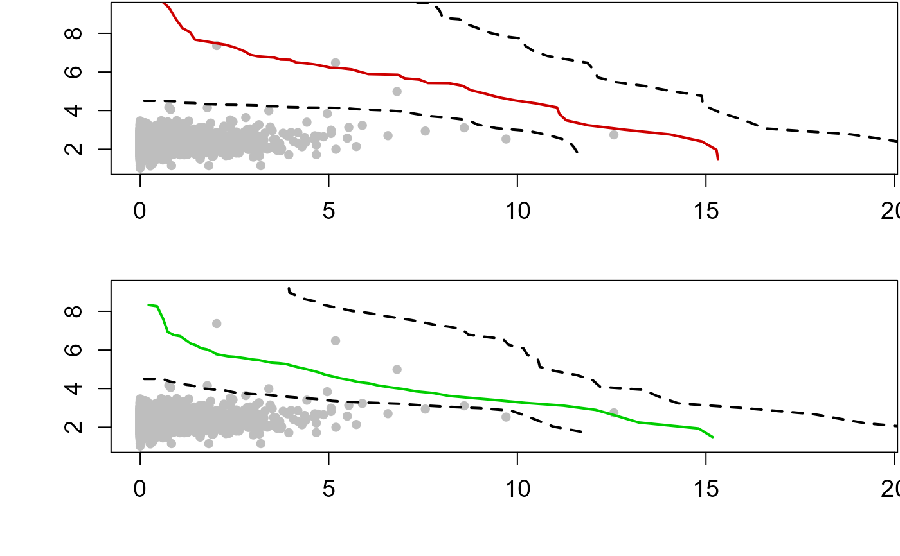

Derives return curves that capture uncertainty
return_curve_est.RdCalculates return level curves using two extremal dependence models: (1) Heffernan and Tawn (2004) (hereon in HT04) and (2) Wadsworth and Tawn (2013) (hereon in WT13) as outlined in Murphy-Barltrop et al. (2023).
Usage
return_curve_est(
data,
q,
rp,
mu,
n_sim,
n_grad,
n_boot,
boot_method,
boot_replace,
block_length,
boot_prop,
decl_method_x,
decl_method_y,
window_length_x,
window_length_y,
u_x = NA,
u_y = NA,
sep_crit_x = NA,
sep_crit_y = NA,
alpha = 0.1,
most_likely = FALSE,
n_interp = 1000,
n = 10^6,
n_ensemble = 0,
x_lab = colnames(data)[2],
y_lab = colnames(data)[3],
x_lim_min = min(data[, 2], na.rm = TRUE),
x_lim_max = max(data[, 2], na.rm = TRUE) + 0.3 * diff(range(data[, 2], na.rm = TRUE)),
y_lim_min = min(data[, 3], na.rm = TRUE),
y_lim_max = max(data[, 3], na.rm = TRUE) + 0.3 * diff(range(data[, 3], na.rm = TRUE)),
plot = TRUE
)Arguments
- data
Data frame of raw data detrended if necessary. First column should be of class
Date.- q
Numeric vector of length one specifying quantile level for fitting GPDs and the HT04 and WT13 models.
- rp
Numeric vector of length one specifying return period of interest.
- mu
Numeric vector of length one specifying the (average) occurrence frequency of events in Data. Default is 365.25, daily data.
- n_sim
Numeric vector of length one specifying the number of simulations for HT model. Default is
50.- n_grad
Numeric vector of length one specifying number of number of rays along which to compute points on the curve. Default is
50.- n_boot
Numeric vector of length one specifying number of bootstrap samples. Default is
100.- boot_method
Character vector of length one specifying the bootstrap method. Options are
"basic"(default),"block"or"monthly".- boot_replace
Character vector of length one specifying whether bootstrapping is carried out with
"TRUE"or without"FALSE"replacement. Only required ifboot_method = "basic". Default isNA.- block_length
Numeric vector of length one specifying block length. Only required if
boot_method = "block". Default isNA.- boot_prop
Numeric vector of length one specifying the minimum proportion of non-missing values of at least of the variables for a month to be included in the bootstrap. Only required if
boot_method = "monthly". Default is0.8.- decl_method_x
Character vector of length one specifying the declustering method to apply to the first variable. Options are the storm window approach
"window"(default) and the runs method"runs".- decl_method_y
Character vector of length one specifying the declustering method to apply to the second variable. Options are the storm window approach
"window"(default) and the runs method"runs".- window_length_x
Numeric vector of length one specifying the storm window length to apply during the declustering of the first variable if
decl_method_x = "window".- window_length_y
Numeric vector of length one specifying the storm window length to apply during the declustering of the second variable if
decl_method_y = "window".- u_x
Numeric vector of length one specifying the (quantile) threshold to adopt in the declustering of the first variable if
decl_method_x = "runs". Default isNA.- u_y
Numeric vector of length one specifying the (quantile) threshold to adopt in the declustering of the second variable if
decl_method_y = "runs". Default isNA.- sep_crit_x
Numeric vector of length one specifying the separation criterion to apply during the declustering of the first variable if
decl_method_x = "runs". Default isNA.- sep_crit_y
Numeric vector of length one specifying the separation criterion to apply during the declustering of the second variable if
decl_method_y = "runs". Default isNA.- alpha
Numeric vector of length one specifying the
100(1-alpha)%confidence interval. Default is0.1.- most_likely
Character vector of length one specifying whether to estimate the relative likelihood of events along the curves. For the ht04 curve probabilites are estimated by simulating from the ht04 model while for the wt13 curve a two-sided conditional sampling (using q as the threshold for both samples) copula theory is adopted. Default is
FALSE.- n_interp
Numeric vector of length one specifying the resolution of the interpolation of the curves Default is
1000thus the curve will be composed of1000points. The interpolation is only carried out ifmost-likely = TRUE.- n
Numeric vector of length one specifying the size of the sample from the fitted joint distributions used to estimate the density along an return curves. Default is
10^6- n_ensemble
Numeric vector of length one specifying the number of possible design events sampled along the two curves. Default is
0- x_lab
Character vector specifying the x-axis label. Default is
colnames(data)[2].- y_lab
Character vector specifying the y-axis label. Default is
colnames(data)[3].- x_lim_min
Numeric vector of length one specifying x-axis minimum. Default is
min(data[,2],na.rm=TRUE).- x_lim_max
Numeric vector of length one specifying x-axis maximum. Default is
max(data[,2],na.rm=TRUE)+0.3*diff(range(data[,3],na.rm=TRUE)).- y_lim_min
Numeric vector of length one specifying y-axis minimum. Default is
min(data[,3],na.rm=TRUE).- y_lim_max
Numeric vector of length one specifying y-axis maximum. Default is
max(data[,3],na.rm=TRUE)+0.3*diff(range(data[,3],na.rm=TRUE)).- plot
Logical; whether to plot return curves. Default is
"TRUE".
Value
List comprising the median curve based on the HT04 model median_ht04, and the upper ub_ht04 and lower lb_ht04 bound of its 100(1-alpha)% confidence interval. Analogous results for the curve based on the WT13 method median_wt13, ub_wt13 and lb_wt13. If plot=TRUE the median return level curve and associated 100(1-alpha)% confidence intervals are plotted for both extremal dependence models. If most-likely=TRUE, the relative probability of events on the two curves is also returned contour_ht04 and contour_wt13 along with the "most-likely"design event most_likely_ht04 and most_likely_wt13, and an ensemble of possible "design events"sampled along the curve ensemble_ht04 and ensemble_wt13.
Details
The HT04 model is fit to two conditional samples. One sample comprises the declustered time series of the first variable paired with concurrent values of the other variable. The second sample is obtained in the same way but with the variables reversed.
Examples
#Data starts on first day of 1948
head(S22.Detrend.df)
#> Date Rainfall OsWL Groundwater
#> 1 1948-01-01 0.00 NA NA
#> 2 1948-01-02 0.14 NA NA
#> 3 1948-01-03 0.00 NA NA
#> 4 1948-01-04 0.00 NA NA
#> 5 1948-01-05 0.00 NA NA
#> 6 1948-01-06 0.00 NA NA
#Dataframe ends on 1948-02-03
tail(S22.Detrend.df)
#> Date Rainfall OsWL Groundwater
#> 25962 2019-01-29 NA NA 2.69
#> 25963 2019-01-30 NA NA 2.68
#> 25964 2019-01-31 NA NA 2.65
#> 25965 2019-02-01 NA NA 2.64
#> 25966 2019-02-02 NA NA 2.62
#> 25967 2019-02-03 NA NA 2.60
#Adding dates to complete final month of combined records
final.month = data.frame(seq(as.Date("2019-02-04"),as.Date("2019-02-28"),by="day"),NA,NA,NA)
colnames(final.month) = c("Date","Rainfall","OsWL","Groundwater")
S22.Detrend.df.extended = rbind(S22.Detrend.df,final.month)
#Derive return curves
return_curve_est(data=S22.Detrend.df.extended[,1:3],
q=0.985,rp=100,mu=365.25,n_sim=100,
n_grad=50,n_boot=100,boot_method="monthly",
boot_replace=NA, block_length=NA, boot_prop=0.8,
decl_method_x="runs", decl_method_y="runs",
window_length_x=NA,window_length_y=NA,
u_x=0.95, u_y=0.95,
sep_crit_x=36, sep_crit_y=36,
alpha=0.1, x_lab=NA, y_lab=NA)

#> $median_ht04
#> Rainfall OsWL
#> [1,] 0.2807818 10.134562
#> [2,] 0.5372514 9.731730
#> [3,] 0.7688623 9.318477
#> [4,] 0.9532240 8.719172
#> [5,] 1.1248753 8.267698
#> [6,] 1.3167046 8.064879
#> [7,] 1.4564996 7.671711
#> [8,] 1.6567058 7.608166
#> [9,] 1.8561607 7.544859
#> [10,] 2.0545334 7.479432
#> [11,] 2.2526708 7.413746
#> [12,] 2.4376357 7.313394
#> [13,] 2.6121641 7.192612
#> [14,] 2.7775049 7.058227
#> [15,] 2.9205128 6.886311
#> [16,] 3.1095471 6.811844
#> [17,] 3.3244180 6.779192
#> [18,] 3.5445300 6.745744
#> [19,] 3.7254804 6.643445
#> [20,] 3.9699788 6.629354
#> [21,] 4.1337162 6.495056
#> [22,] 4.3692345 6.450795
#> [23,] 4.6040607 6.395013
#> [24,] 4.8265310 6.315583
#> [25,] 5.0436244 6.222541
#> [26,] 5.3371864 6.196413
#> [27,] 5.6080274 6.133523
#> [28,] 5.8245147 6.011270
#> [29,] 6.0493329 5.889011
#> [30,] 6.4247523 5.872879
#> [31,] 6.8279243 5.854519
#> [32,] 7.0145451 5.669137
#> [33,] 7.4027243 5.604704
#> [34,] 7.6311238 5.426962
#> [35,] 8.1870811 5.417501
#> [36,] 8.5531086 5.280073
#> [37,] 8.7681355 5.055113
#> [38,] 9.1275573 4.884495
#> [39,] 9.4864284 4.696193
#> [40,] 9.9457669 4.525884
#> [41,] 10.5127353 4.365473
#> [42,] 11.0490137 4.164846
#> [43,] 11.1158819 3.816887
#> [44,] 11.2930758 3.494353
#> [45,] 11.8659951 3.239270
#> [46,] 12.8263769 3.012153
#> [47,] 14.0507277 2.760988
#> [48,] 14.8918962 2.401068
#> [49,] 15.2795995 1.963544
#> [50,] 15.3183809 1.493085
#>
#> $ub_ht04
#> Rainfall OsWL
#> [1,] 0.6873118 23.329443
#> [2,] 1.2483710 21.261302
#> [3,] 1.6990671 19.356985
#> [4,] 2.1034195 18.007913
#> [5,] 2.5524019 17.463978
#> [6,] 2.7941469 15.968497
#> [7,] 3.1318486 15.321589
#> [8,] 3.5276198 15.046889
#> [9,] 3.8727109 14.632298
#> [10,] 4.0987727 13.905374
#> [11,] 4.3822640 13.457093
#> [12,] 4.5993040 12.893303
#> [13,] 4.9151404 12.633609
#> [14,] 5.0822434 12.067733
#> [15,] 5.3914225 11.848567
#> [16,] 5.6312013 11.507761
#> [17,] 6.0070192 11.425593
#> [18,] 6.3902862 11.341798
#> [19,] 6.5236131 10.866251
#> [20,] 6.5877175 10.327324
#> [21,] 6.7608359 9.973925
#> [22,] 7.0321523 9.760013
#> [23,] 7.3447810 9.593996
#> [24,] 7.7666535 9.540744
#> [25,] 7.9329592 9.202266
#> [26,] 8.0212246 8.799030
#> [27,] 8.4607798 8.734151
#> [28,] 8.6833610 8.460579
#> [29,] 8.9821896 8.249072
#> [30,] 9.2754965 8.025661
#> [31,] 9.6470713 7.850151
#> [32,] 10.1258620 7.730770
#> [33,] 10.2147849 7.345858
#> [34,] 10.4515251 7.055322
#> [35,] 10.8052736 6.823440
#> [36,] 11.3095862 6.652636
#> [37,] 11.8553317 6.475449
#> [38,] 12.0211485 6.109247
#> [39,] 12.1293477 5.720065
#> [40,] 12.6228182 5.469240
#> [41,] 13.3694127 5.274247
#> [42,] 14.0560649 5.020426
#> [43,] 14.8854978 4.764984
#> [44,] 14.9192727 4.288502
#> [45,] 15.3730291 3.894848
#> [46,] 16.0057561 3.505684
#> [47,] 16.5613890 3.071875
#> [48,] 18.8448878 2.767367
#> [49,] 20.4727513 2.283847
#> [50,] 22.2879268 1.707815
#>
#> $lb_ht04
#> Rainfall OsWL
#> [1,] 0.1073596 4.505739
#> [2,] 0.2149233 4.505739
#> [3,] 0.3228965 4.505739
#> [4,] 0.4314880 4.505739
#> [5,] 0.5409112 4.505739
#> [6,] 0.6499295 4.497947
#> [7,] 0.7600615 4.491678
#> [8,] 0.8712852 4.485347
#> [9,] 0.9838316 4.478940
#> [10,] 1.0766601 4.405547
#> [11,] 1.1908311 4.400464
#> [12,] 1.3071547 4.395286
#> [13,] 1.4259197 4.390000
#> [14,] 1.5385515 4.365277
#> [15,] 1.6500238 4.334825
#> [16,] 1.7770558 4.330430
#> [17,] 1.9080082 4.325898
#> [18,] 2.0393069 4.314725
#> [19,] 2.1751671 4.303788
#> [20,] 2.3229421 4.302654
#> [21,] 2.4771977 4.301471
#> [22,] 2.6350233 4.295684
#> [23,] 2.7987063 4.287795
#> [24,] 2.9704757 4.279588
#> [25,] 3.1512359 4.270951
#> [26,] 3.3093370 4.230079
#> [27,] 3.5150380 4.225512
#> [28,] 3.7344820 4.220639
#> [29,] 3.9317488 4.184997
#> [30,] 4.1776303 4.175931
#> [31,] 4.4277758 4.155489
#> [32,] 4.7229551 4.150675
#> [33,] 5.0458807 4.145408
#> [34,] 5.3853498 4.130364
#> [35,] 5.6945453 4.079037
#> [36,] 6.0713408 4.044299
#> [37,] 6.4997284 4.011481
#> [38,] 6.9305004 3.954560
#> [39,] 7.2698987 3.837505
#> [40,] 7.6486778 3.716421
#> [41,] 8.1870811 3.625629
#> [42,] 8.7026992 3.497262
#> [43,] 8.9443227 3.270718
#> [44,] 9.4400940 3.088543
#> [45,] 10.2930608 2.945238
#> [46,] 10.8639614 2.707530
#> [47,] 11.3556411 2.427264
#> [48,] 11.5040486 2.087138
#> [49,] 11.6158829 1.737574
#> [50,] 11.6695496 1.380666
#>
#> $contour_ht04
#> [1] NA
#>
#> $most_likely_ht04
#> [1] NA
#>
#> $ensemble_ht04
#> [1] NA
#>
#> $median_wt13
#> Rainfall OsWL
#> [1,] 0.2252790 8.333088
#> [2,] 0.4469487 8.267630
#> [3,] 0.6099003 7.603004
#> [4,] 0.7316948 6.930148
#> [5,] 0.8926749 6.771839
#> [6,] 1.0637509 6.711696
#> [7,] 1.2040063 6.518792
#> [8,] 1.3364276 6.334745
#> [9,] 1.4824606 6.231440
#> [10,] 1.6135777 6.093314
#> [11,] 1.7654611 6.031146
#> [12,] 1.8981731 5.920881
#> [13,] 2.0161559 5.784487
#> [14,] 2.1662881 5.729706
#> [15,] 2.3174751 5.675248
#> [16,] 2.4848275 5.648468
#> [17,] 2.6482522 5.608038
#> [18,] 2.8112991 5.561535
#> [19,] 2.9721800 5.506601
#> [20,] 3.1504975 5.471707
#> [21,] 3.3119919 5.406917
#> [22,] 3.4757127 5.340412
#> [23,] 3.6771249 5.313089
#> [24,] 3.8722111 5.268744
#> [25,] 4.0333630 5.180674
#> [26,] 4.2026175 5.096261
#> [27,] 4.3824944 5.016303
#> [28,] 4.5612861 4.929002
#> [29,] 4.7399249 4.835334
#> [30,] 4.9008840 4.722107
#> [31,] 5.1023939 4.633041
#> [32,] 5.3019712 4.534345
#> [33,] 5.5372128 4.449628
#> [34,] 5.7617728 4.347692
#> [35,] 6.0580245 4.274221
#> [36,] 6.3066787 4.161484
#> [37,] 6.6218480 4.067664
#> [38,] 6.9769725 3.974230
#> [39,] 7.3162966 3.855479
#> [40,] 7.7847712 3.764379
#> [41,] 8.1765842 3.622290
#> [42,] 8.7708043 3.516640
#> [43,] 9.4568015 3.399612
#> [44,] 10.2127954 3.257768
#> [45,] 11.2121911 3.117053
#> [46,] 12.0748661 2.895497
#> [47,] 12.6318590 2.585294
#> [48,] 13.2136178 2.245553
#> [49,] 14.8034806 1.934178
#> [50,] 15.1756348 1.488687
#>
#> $ub_wt13
#> Rainfall OsWL
#> [1,] 0.6082029 20.761782
#> [2,] 0.8766927 15.235182
#> [3,] 1.1491821 13.422781
#> [4,] 1.4090083 12.399991
#> [5,] 1.6711599 11.786922
#> [6,] 1.9225227 11.305719
#> [7,] 2.1736116 10.946145
#> [8,] 2.4183181 10.636324
#> [9,] 2.6584598 10.364648
#> [10,] 2.9409033 10.265682
#> [11,] 3.2286670 10.183423
#> [12,] 3.5151264 10.094718
#> [13,] 3.7977580 9.993689
#> [14,] 3.9221511 9.546194
#> [15,] 3.9577071 8.969278
#> [16,] 4.1704754 8.787543
#> [17,] 4.3882146 8.621742
#> [18,] 4.6392244 8.513736
#> [19,] 4.8501018 8.340669
#> [20,] 5.1056958 8.233734
#> [21,] 5.3670200 8.128214
#> [22,] 5.6273262 8.014230
#> [23,] 5.9331068 7.946283
#> [24,] 6.2302398 7.855378
#> [25,] 6.5187854 7.743851
#> [26,] 6.8396639 7.653313
#> [27,] 7.1669972 7.554712
#> [28,] 7.4893244 7.437591
#> [29,] 7.8091975 7.305169
#> [30,] 8.1907137 7.206471
#> [31,] 8.5414331 7.067486
#> [32,] 8.7036504 6.788379
#> [33,] 9.1398597 6.680292
#> [34,] 9.6190917 6.574716
#> [35,] 9.7635777 6.264061
#> [36,] 10.1615247 6.080969
#> [37,] 10.2636691 5.743168
#> [38,] 10.5491621 5.486208
#> [39,] 10.5948525 5.125599
#> [40,] 11.0136326 4.902185
#> [41,] 11.5736359 4.702970
#> [42,] 11.9969191 4.434549
#> [43,] 12.1968168 4.088754
#> [44,] 13.3264929 3.939678
#> [45,] 13.7350797 3.588662
#> [46,] 14.2628951 3.235142
#> [47,] 15.9582470 2.997190
#> [48,] 17.8479673 2.674989
#> [49,] 19.2250689 2.206893
#> [50,] 22.0409595 1.700206
#>
#> $lb_wt13
#> Rainfall OsWL
#> [1,] 0.1071474 4.498852
#> [2,] 0.2144985 4.498852
#> [3,] 0.3222583 4.498852
#> [4,] 0.4306352 4.498852
#> [5,] 0.5398421 4.498852
#> [6,] 0.6438674 4.465517
#> [7,] 0.7385967 4.393667
#> [8,] 0.8352048 4.341891
#> [9,] 0.9380104 4.317896
#> [10,] 1.0429926 4.299715
#> [11,] 1.1358763 4.244514
#> [12,] 1.2311557 4.199110
#> [13,] 1.3345919 4.174229
#> [14,] 1.4304454 4.130301
#> [15,] 1.5257818 4.085314
#> [16,] 1.6202839 4.038483
#> [17,] 1.7155577 3.992564
#> [18,] 1.8284378 3.974159
#> [19,] 1.9374344 3.945013
#> [20,] 2.0642780 3.937250
#> [21,] 2.2007514 3.935397
#> [22,] 2.3011835 3.880820
#> [23,] 2.4119171 3.836333
#> [24,] 2.5251502 3.791089
#> [25,] 2.6626059 3.767034
#> [26,] 2.8103813 3.746259
#> [27,] 2.9568734 3.716677
#> [28,] 3.1274222 3.700542
#> [29,] 3.3197627 3.692534
#> [30,] 3.4846287 3.652600
#> [31,] 3.6649512 3.615496
#> [32,] 3.8637899 3.581371
#> [33,] 4.0762824 3.545058
#> [34,] 4.3040486 3.506075
#> [35,] 4.5678930 3.474038
#> [36,] 4.8348363 3.428593
#> [37,] 5.0946426 3.365038
#> [38,] 5.4266365 3.318029
#> [39,] 5.8421397 3.284388
#> [40,] 6.3264170 3.250474
#> [41,] 6.8892129 3.212747
#> [42,] 7.4302236 3.135212
#> [43,] 8.1079095 3.060352
#> [44,] 8.9890306 2.989759
#> [45,] 9.8218292 2.857149
#> [46,] 10.2068547 2.605528
#> [47,] 10.5610084 2.328867
#> [48,] 10.9443211 2.035272
#> [49,] 11.7370403 1.745047
#> [50,] 11.7370403 1.382745
#>
#> $contour_wt13
#> [1] NA
#>
#> $most_likely_wt13
#> [1] NA
#>
#> $ensemble_wt13
#> [1] NA
#>